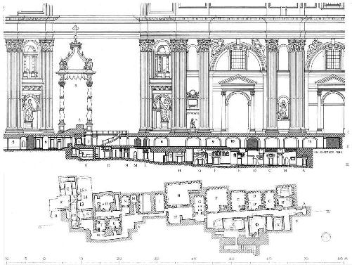
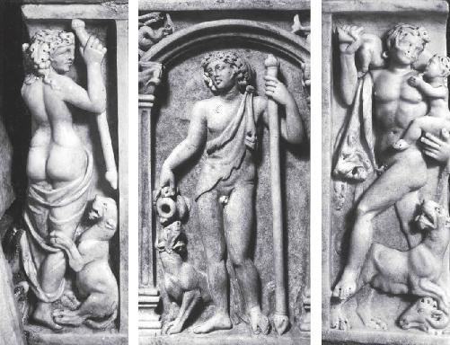
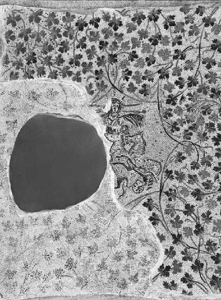
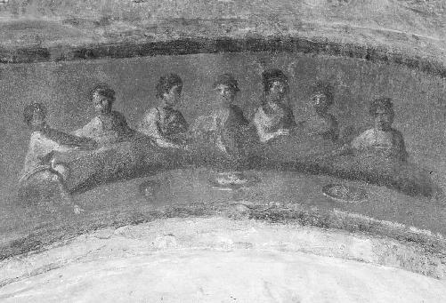
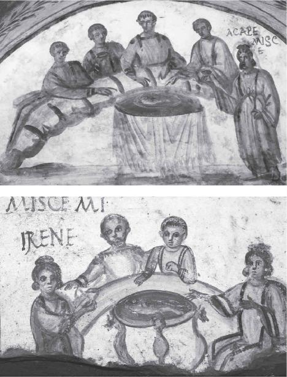
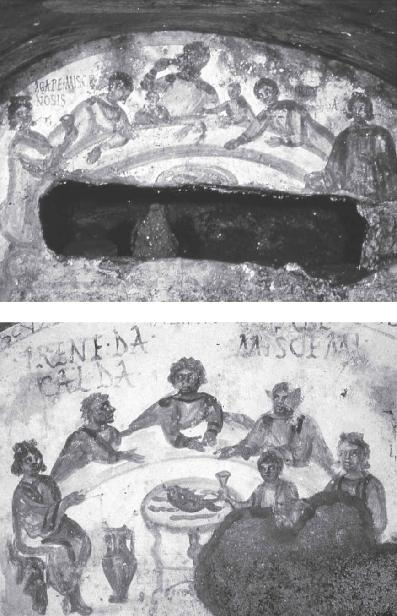

The Uber speeds west across the Eternal City, skirting the Colosseum and closing in on the Tiber. Father Francis and I are off to our second appointment of the day. Just after the Rose Garden on the Aventine Hill, the priest rattles off another landmark he knows will pique my interest off Via della Greca (Greek Street). Nowadays the Greek Rite church of Santa Maria in Cosmedin is where the tourists line up to snap a trite photo of their hands entering the open stone mouth of the Bocca della Verità, the timeworn marble mask made famous by Audrey Hepburn and Gregory Peck in the 1953 film Roman Holiday. Originally this was the site of an old Greek-speaking parish from the sixth century AD. Since Constantine, the Greeks who cornered this part of Rome turned the whole neighborhood into the ripa Graeca (the Greek bank).
But the language that founded Western civilization was here much earlier, of course. After planting themselves in Magna Graecia in the eighth century BC, the Greeks and their cults traveled north to Rome centuries before the birth of Jesus. By AD 150, as the Gospel of John started circulating among Greek speakers in the capital of the empire, the mystics were still here, thirsty to keep their Mysteries alive amid opposition on all sides. The political suppression of the God of Ecstasy by the Roman senate was only part of the issue. At the time Christianity itself was already beginning to fracture. There were those like the Aurelii and the Gnostics, on the one hand, who thought initiation into Christianity’s biggest secrets belonged to anybody who consumed the “True Food” and “True Drink” of the Lord of Death, just as John promised. And there were those like the Church Fathers, on the other, who thought a few men within the 1 percent were uniquely called by God to handle the Eucharist, perpetuating a tradition of elitism that had existed among the Egyptian pharaohs, Near Eastern royalty, and Jerusalem’s high priests for many thousands of years.
Traces of the tangled history, where women and drugs once competed for the survival of their version of Christianity, have all been wonderfully preserved in the building that classicist Helen F. North once described as “the reason why Rome is still the center of the civilized world.”1
St. Peter’s Basilica.
Father Francis and I are about to meet the gatekeeper of the City of the Dead that rests under the largest church building on the planet. The foundations of Christendom were literally built on top of a death cult. Complete with a graveyard wine to match the graveyard beers that could very well have sparked the Agricultural Revolution in our deep prehistory. Was the Drug of Immortality the spark of the Christian Revolution that would turn the cult of Jesus into the religion that colonized the world? At last I’ve come to see the evidence for myself. Where the continuity between Dionysus and Jesus is hidden deep underground. And where all the high drama between the Greek mystics and the Greek bureaucrats is locked in place under Catholicism’s highest altar, harkening back to a lost time when the sacred language of the Church was Greek.
As we motor along the eastern bank of the Tiber, the pines and cypresses guiding our way, Father Francis reminds me that the earliest Popes were, in fact, all Greek speakers, including Pope Clement I (ca. AD 88–99), who actually died in Greece; Pope Telesphorus (ca. AD 126–137), who came from a Greek family in Calabria to the south; and Pope Anicetus (ca. AD 155–160), whose name is Greek for “unconquered.” After all, what good was a Pope who couldn’t read the Greek of the New Testament? Or unpack the hidden teachings of Jesus that even the Gospel of Mark had plainly referred to as musteria, “religious secrets, confided only to the initiated and not to be communicated by them to ordinary mortals”?2 But most important, the Popes and the emerging orthodoxy of the Church had to be able to defend against all the mystics who claimed to be the true heirs of the Dionysian Jesus. Whether they had penetrated the “symbols” and “language” of the Gospel of John to come into possession of the real Eucharist, or been exposed to a Gnostic version of Jesus, the mystics wanted the pharmakon that would unlock the Kingdom of Heaven.
In the early centuries of the faith, there were many Christians in Rome who professed knowledge of the “True Drink.” Ruck mentions several in his “Jesus, the Drug Man” chapter from The Apples of Apollo: Pagan and Christian Mysteries of the Eucharist. The earliest high-profile example is Simon Magus, the Samaritan sorcerer of the first century AD who traveled to Rome all the way from Jesus’s neck of the woods in what today is Israel. He would establish a “rival sect” to the mainline Church, becoming “the founder of all heresies, with a religious following of Simonians who considered him a god.”3 His partner in crime was an alter–Mary Magdalene named Helena, a prostitute whom Simon Magus had picked up at a brothel in Tyre. She claimed to be the reincarnation of Helen of Troy. The Church historian Eusebius (AD 263–339) relates how Simon Magus won over “many of the inhabitants of Rome” through his “magic.” Justin Martyr claimed a statue in his honor was erected on an island in the Tiber, now to my left, with the inscription: SIMONI DEO SANCTO (to Simon, a holy god).4
Instead of the ordinary bread and wine, wrote Eusebius, the followers of this fake “Christian philosophy” used special “incense” and “libations” in their “secret rites” that resulted in their being “thrown into marvel” or thambothesesthai (θαμβωθήσεσθαι) in the most Dionysian way possible, with utter “ecstasy” (ekstaseos/ἐκστάσεως) and “frenzy” (manias/μανιάς).5 The Church Father Irenaeus (ca. AD 130–202) said the Simonians’ sacraments were nothing but “love charms” (filtra/φίλτρα) and “love potions” (agogima/ἀγώγιμα).6 The Acts of Peter, an apocryphal Greek text from the second century AD, dramatizes the death of their spellbinding leader. When Simon Magus was levitating in the Roman Forum one day, Saint Peter prayed for God Almighty himself to stop the arch-heretic in midair. Without delay Simon Magus fell to the ground, breaking his leg at the site of the current-day Church of Santa Francesca Romana.
And so began Gnosticism. It grew particularly popular in Rome during the second and third centuries AD. As mentioned earlier, Princeton scholar Elaine Pagels has written extensively about the forbidden nature of the Greek gnosis (knowledge) that was the Gnostics’ chief aim. “Self-knowledge is knowledge of God; the self and the divine are identical.” Pagels looks to the Greek-educated Valentinus (ca. AD 100–160) as the most famous and influential of the early Gnostics, a “spiritual master” who established his school in the Eternal City around AD 140.7 Just like Simon Magus, Valentinus was out there trying to steer Romans toward the true version of Christianity. He claimed to have been initiated by Theudas, a direct disciple of Saint Paul, “into a secret doctrine of God.”8 Pagels explains the position: “Paul himself taught this secret wisdom, he [Valentinus] says, not to everyone, and not publicly, but only to a select few whom he considered to be spiritually mature.”9
It’s no wonder, then, that the Gospel of John became the favorite Gospel of the Gnostics in Rome. Especially among the Valentinians, who wrote the oldest attested commentaries on John’s Greek, even before the Church Fathers got around to it.10 The record of their ritual practices adds enormous weight to Dennis MacDonald’s insight about the Greek language in John 6:53–56 being designed by the Evangelist as “Dionysian cult imagery,” “specifically the eating of the flesh and blood of the god and the immortality that initiates gain by such activity.” In perfect accord with John’s word choice—the gnawing and munching on the flesh of Jesus, just like the Dionysian Eucharist of raw flesh and blood (omophagon charin) from Euripides—part of the “secret doctrine” that apparently passed from Jesus to Paul to Theudas to Valentinus was a magical, drugged Eucharist.
And it was Valentinus’s student, Marcus, who unleashed the pharmakon on the ancient Mediterranean in the years he was active, between AD 160 and 180. Ruck notes that “although all the heretical sects had a reputation for herbalism and sorcery, Marcus himself was apparently notorious for his expertise with drugs: thus Irenaeus accused him of pharmacological deviltry.”11 Similarly to Simon Magus, Marcus apparently seduced the wife of one of Irenaeus’s deacons to become a Marcosian with a blasphemous “love potion.” For some inexplicable reason, both Irenaeus and another Church Father named Hippolytus (ca. AD 170–235) went to great lengths to document the procedure by which the secret sacrament was actually made. And how the fairer sex, instead of throwing together some leftovers for the kids, was busy cooking up a healthy dose of drugged wine.
At Marcus’s Mass, women were invited to perform their own solemn consecration of the holy wine. After being handed a smaller chalice by the heretic, each woman would offer up the “Eucharistic prayer,” blessing the purple-reddish elixir that had been spiked with an unknown pharmakon. In his recounting of the Marcosian ceremony, Hippolytus uses the Greek word for “drug” no less than seven times!12 The women would then pass their cups back to Marcus, who would pour the contents into a larger chalice that seemed to miraculously overflow with more wine than had been added to it, a classic Epiphany trick worthy of both Dionysus and Jesus. Marcus would then invoke the goddess Grace or Charis (Χάρις) by name, the same Greek word that was used by Euripides to capture the Eucharist four hundred years before the birth of Jesus, omophagon charin. In the language of the Mysteries, Marcus would call Charis the one “who transcends all knowledge and speech.”13 Once the “silly women” had drunk from the central chalice and been “whipped into frenzy” and “ecstasy” like a bunch of maenads, they would then start prophesying.14
Echoes of the lethal wine from Corinth. And Aurelia Prima’s Holy Grail.
For a time the heretical Eucharists of the Simonians, Valentinians, and Marcosians posed a genuine threat to Church. But like the Greek Mysteries themselves, Gnosticism in any robust form would not survive the fourth century AD. A movement based on underground initiation rites, intended only for the “spiritually mature,” could hardly keep up with the expanding bureaucracy of Constantine’s religion—those “social and political structures that identify and unite people into a common affiliation.”15 For Pagels the shadowy practices of the Gnostics simply “did not lend themselves to mass religion.”16 The Eucharist of John’s Gospel may have been intended for the 99 percent, but the Greek-speaking Christian mystics ran into the same problem as their Dionysian sisters centuries earlier. It’s hard to mainstream this stuff.
If drugged wine was the real secret behind the Greek and Gnostic Mysteries, then finding enough skilled women to safely and reliably produce the sacrament must have been very difficult. No wonder the Vatican went with the cardboard wafer and grape juice. Sensing their advantage, the Church Fathers did everything in their power to abolish the competition. “The framework of canon, creed and ecclesiastical hierarchy that Irenaeus and others began to forge in the crucible of persecution” during the second century, says Pagels, is what turned Christianity into the default faith of Western civilization in the fourth century and beyond.17
By the death of Eleusis in AD 392, the Eucharist of the female-run house churches and subterranean refrigeria was no more. In perfect imitation of Roman governance and law, women had been systematically excluded from the priesthood. And the bishop had come more and more to resemble a monarch, seated on his throne at the head of the new aboveground basilicas. Like loyal subjects, the parishioners lined the pews to witness the consecration of very ordinary bread and wine by very ordinary men with no particular pharmacological expertise. In a mix of misinterpreted Greek philosophy and shameful Biblical reasoning, Saint Augustine (AD 354–430) and others blamed the passions and appetites of the female body for distancing women from the religious life. Free of the chains of the menstrual cycle, childbirth, and breastfeeding, only men could properly control and tap into the rational aspect of the soul that liberated the male species from their own irrational physicality, connecting them to a spiritual heaven.
“The equation of women with sexuality,” says Karen Jo Torjesen in When Women Were Priests, “meant she was both subordinated to man and alienated from God.”18 Nothing has changed in over sixteen hundred years. In 1976 the Sacred Congregation for the Doctrine of the Faith reaffirmed the infallible doctrine that women had been prohibited from the priesthood “in accordance with God’s plan.”19 “The incarnation of the Word took place according to the male sex,” it proclaimed in an official declaration that was later endorsed by Pope John Paul II in 1994 and again by Pope Francis in 2016.20 Jesus was a man, his Apostles were men. Women can’t be trusted with the Eucharist. End of story.
The 1976 declaration specifically mentions the admission of women to the priesthood by “a few heretical sects in the first centuries, especially Gnostic ones.”21 But that “innovation,” notes the Vatican, was quickly condemned by the Church Fathers. With the Nag Hammadi texts, the Gospel of Mary Magdalene, and other Gnostic writings strategically banned from the final version of the New Testament that was adopted by church councils in both the Catholic West and the Orthodox East during the fourth and fifth centuries AD, all memory of the Gnostics was “excised from the history of the Church of Rome,” according to Ruck.
But the clues are still out there. And we’re closing in.
The Uber crosses the Ponte Vittorio Emanuele II into the majestic sector of Rome that has lured me back once again like a rare-earth magnet. As we slowly creep along Borgo Santo Spirito, and the first of the 284 Doric columns around St. Peter’s Square come into view, I get that tingling sensation. The same mixed feelings that run down my spine every time I’m about to set foot into the smallest country in the world. Awe, nostalgia, and dread. No matter how warm and hospitable the Vatican staff has been when they’ve welcomed me here over the past year, arms open, I just can’t help it. My stomach is in knots. The Catholic boy inside me is only one misstep away from excommunication.
Am I really accusing the Church that raised me of serving up a placebo for the better part of two thousand years? And suppressing the heavenly visions promised in the first chapter of John’s Gospel: “I tell you for certain that you will see heaven open and God’s angels going up and down”?
Whenever I haven’t seen it in a while, the first sight of Michelangelo’s dome on top of St. Peter’s always gives me goose bumps. The most renowned example of Renaissance architecture was the model for St. Paul’s in London, Les Invalides in Paris, and the United States Capitol back home in Washington, D.C. But few know why this iconic structure sits precisely where it does.
Original construction began in the fourth century under Constantine to mark the legendary tomb of Saint Peter, who was apparently crucified upside-down in the nearby Circus of Nero around AD 64. The Apostle was then reportedly interred in the existing Roman necropolis, on top of which the current basilica rises to this day. To flatten the site for his monumental church, Constantine buried some of the ancient tombs, leaving Saint Peter’s intact. By the Renaissance the aging shrine needed a makeover. When he took over from Bramante and Raphael in 1547 at the age of seventy-two, Michelangelo scrapped their designs for the basilica but kept the general position of the cupola, above Saint Peter’s alleged remains. After the master’s death, it fell to Bernini to memorialize the exact spot where the subterranean tomb of the first Pope meets the space beneath Michelangelo’s cupola. Bernini would mark the vortex in the basilica’s sculpted bronze canopy known as the Baldachin.
Situated directly over the high altar where the Pope alone is authorized to transubstantiate the bread and wine during the Liturgy of the Eucharist, Bernini included balconies to warehouse precious relics—the head of Saint Andrew (Peter’s brother) and fragments of the True Cross, said to date to Jesus’s crucifixion like the piece in Notre Dame. At the time it was all part of Pope Urban VIII’s plan. “These relics, placed within a centralized location of Peter’s tomb, implicated a direct connection between the Pope, Christ, and the early martyrs, thus reinforcing his position within the church and as the medium between heaven and earth.”22 A straight vertical line welding the ancestral past not only to the present, but to the future. Because every time the Eucharist is consecrated as part of the “funeral banquet” that is the Mass, the faithful are simultaneously commemorating the Last Supper and looking forward to the end of the world—when “Christ will come again in glory to judge the living and the dead.” According to the Catechism of the Catholic Church: “That is why Christians pray, above all in the Eucharist, to hasten Christ’s return by saying to him: ‘Our Lord, come!’”23

Cross section of St. Peter’s Basilica, showing the relative position of the various, subterranean features of the Vatican Necropolis. With the kind permission of the Fabbrica di San Pietro in Vaticano
St. Peter’s Basilica is where past, present, and future all converge.
And where Jesus as the Lord of Death invites both the living and the dead to participate in the Eucharist that delivers instant immortality to anyone who consumes it.
It’s the world’s longest-running séance on Catholicism’s holiest ground.
So a lot is riding on whatever lies beneath Michelangelo’s ribbed dome, at 448.1 feet the tallest in the world. But until the 1940s, no Pope ever bothered to properly investigate, partly because of a thousand-year-old curse “attested by secret and apocalyptic documents” that would rain destruction on whoever dared disturb the final resting place of Saint Peter.24 For Pius XII his desire to be entombed as close as possible to the founder of the Catholic Church apparently outweighed any superstitions. Over the course of the ensuing decade, the papal excavations finally dug up the underground complex now known as the Vatican Necropolis, the City of the Dead. Twenty-two mausolea were unearthed in the end, hosting more than a thousand tombs dating mostly to the second and third centuries AD.
Taking a cue from the Romans, the earliest Christians came to visit Saint Peter in the intoxicated refrigeria around his second-century aedicula, or shrine. It was here that Yale scholar Ramsay MacMullen cited evidence for “religious picnics” and “communion parties” in the form of animal bones and a wine tube. Part of the Vatican’s discovery in the 1940s included a large travertine slab with stone legs. It was an altar. A clue to what the paleo-Christians were drinking in their all-nighters to coax Peter and the dead ancestors back from the grave emerges from a neighboring monument identified as Mausoleum M, the Tomb of the Julii, originally built for the Julian family as the second century became the third.
Father Francis and I had to check it out. So I sent an email to Pietro Zander, the archaeologist who wrote the Vatican’s book on the City of the Dead and continues to lead all research on the Necropolis and related classical antiquities for the Fabbrica di San Pietro, the Pope’s department responsible for the conservation and management of St. Peter’s Basilica.25 The Fabbrica has been organizing special tours of the Necropolis for a few years through the Ufficio Scavi (Excavations Office). But I was only interested in seeing Mausoleum M, the one sepulcher that Zander explicitly qualifies as “Christian,” acknowledging the pagan origin of the artistic deposits in the remaining underground tombs. While Zander could not be with us today, he politely arranged for us to meet his colleague, Carlo Colonna.
As Father Francis and I make our way to the Cancello Petriano, next to St. Peter’s Square, to undergo a security check by the Swiss Guards, I don the lanyard showcasing my photo ID card issued by the Vatican Secret Archives, which we will visit in the next chapter. I’ve convinced myself that it’s a badge of invincibility. I need something to ward off the Renaissance-garbed soldiers in their distinctive blue-and-yellow jester suits with the red sleeves and silly berets. I hold up the photo ID with my left hand and a copy of Zander’s email with my right, which gets a double salute from the Pope’s military force. On our left we pass the Sala Nervi, where Father Francis first read my proposal for this zany adventure, four years ago. After a short walk we arrive punctually at the octagonal Ufficio Scavi to our right.

Detail of a marble sarcophagus from the so-called Tomb of the Egyptians (Tomb Z) in the Vatican Necropolis. A maenad with her magic wand or thyrsos (left); Dionysus, drunk and crowned in ivy, holding a similar magic wand in his left hand, and a wine pitcher in his right (center); and a goat-man or satyr, cradling the infant Dionysus in his arms (right). With the kind permission of the Fabbrica di San Pietro in Vaticano
In a crisp Italian suit and tie Carlo is ready with an envelope of color photographs he kindly printed prior to our appointment. Together we shuffle through the 8½-by-11-inch reproductions of the early third-century mosaics that line the interior of Mausoleum M. Father Francis marvels in particular at the shots of the ceiling, which I don’t think he has seen in close detail before. Carlo stresses the strict policy of no photography and leads us toward the main entrance to the City of the Dead through Tomb Z, just beside his office.
Passing through the automatic glass doors that slide open as we approach, I can barely resist the urge to stop and soak in the kind of burial chamber that would be better placed on the Giza Plateau. Painted on the wall is a falcon-headed Horus carrying a long magical staff and the ankh, or loop-headed tau cross, that symbolizes immortality.26 There’s also an image of Thoth, the Egyptian god of magic and wisdom, often conflated with the Greek Hermes. Thoth-Hermes is pictured in profile, facing right, in the seated posture of a baboon. A marble sarcophagus that once held the inhabitant of this crypt holds a rare treat. Carved in relief, Dionysus is centered “drunk and seminude” between two fluted pillars. Just like the maenad to his right, with her back to us, the God of Ecstasy is holding his magic wand with the pine cone tip.
We head into the dank confines of the Necropolis proper, which gives off a now-familiar odor that I recognize from the Hypogeum of the Aurelii. We hang a left past Mausoleum H into a tight hallway, barely wider than our shoulders, that claustrophobes would do well to avoid. We gently maneuver around a guided-tour group, a few members of which give Father Francis the requisite nod to the collar. Within half a minute, we’re halted in front of the tight entrance to Mausoleum M. Carlo undoes the double locks that ordinarily protect this tiny cage of a room from prying eyes. I get a kick out of watching Father Francis climb into the porthole, elevated a full two or three feet off the ground. Carlo remains comfortably stationed outside, choosing not to engage in the acrobatics.
Once the priest and I have both lumbered into the crypt, we can stand upright, but the ceiling is not far overhead. The whole chamber is only about thirty-five feet square. Our voices immediately begin echoing off the musty rock as we examine the three mosaics that the Vatican confidently interpreted as Christian during the initial excavations in the 1940s: a fisherman on the north wall, a shepherd on the west wall, and on the east wall two men in a boat above a third figure being swallowed by some kind of marine monster. The first is a reasonable reading of Matthew 4:19, where Jesus instructs Peter and Andrew to become “fishers of men.” The Good Shepherd motif, although it’s more degraded here than in the Hypogeum of the Aurelii, also fits the Gospel accounts. And the third mosaic could very well be a depiction of the Old Testament prophet Jonah, his arms raised in exasperation, entering the belly of the whale. But it’s the ceiling that gives me pause.
Hundreds of tesserae, or minuscule tiles, come together to form the image of a regal charioteer partly obscured by two horses rearing on their hind legs. He wears a white tunic and billowing cloak. Seven beams of light extend from the halo around the figure’s head, suggesting the Roman god Sol Invictus (Unconquered Sun). Some scholars, however, make the compelling case that this is Jesus. The ancient artist may have wanted to portray the wizard from Nazareth as the “Sun of Justice” or the “New Light.”27 Like the deified emperors who would adopt the Sol Invictus look to signal their own apotheosis, the rider holds in his left hand a delicately assembled globe that could easily represent Jesus’s “worldwide” and “eternal dominion,” the supremacy of the “Christian belief in the risen God.”28 In his Exhortation to the Greeks, even Clement of Alexandria refers to Jesus as the “sun of righteousness,” who “rides over the universe” to banish darkness and death. Surrounded by probable scenes from the Old and New Testaments, Mausoleum M could very well be the oldest Christian vault in the world, containing the oldest Christian mosaics ever discovered.

The ceiling mosaic of the so-called Tomb of the Julii (Mausoleum M) in the Vatican Necropolis. The grapevines entangle the central figure, variously interpreted as the Roman god Sol Invictus (the Unconquered Sun) or the Christian Cristo-Sole (Christ-Sun). With the kind permission of the Fabbrica di San Pietro in Vaticano
In which case, I want to know what all the vines are doing here.
Weaving in and out of the golden tesserae that make up the rich, eye-popping background of the ceiling mosaic, green tendrils wind their way on serpentine paths in every conceivable direction. Each of them sprouts brightly colored grape leaves by the dozens and dozens. Although roughly 40 percent of the tesserae from the ceiling have now disappeared, the imprint of creepers and leaves can still be seen in muted tones on the rock face. And not just around the equestrian Jesus, but on the walls too. The more I look, the more I notice the vines climbing their way down into the three scenes on all sides, engulfing the fisherman, shepherd, and sailors. Here in a cramped room only feet from Saint Peter’s supposed tomb, under Michelangelo’s dome that directs sunlight to Catholicism’s highest altar and Baldachin up above … we’re trapped in a subterranean vineyard.
There’s a word for all these plants in Greek. I reach into my brown leather pouch and withdraw the 1829 edition of the New Testament and the Loeb edition of Euripides’s The Bacchae, both happy to have survived the Lizard Lounge in Paris.
“Pater, why don’t you read from your holy book, and I’ll read from mine?” I propose, handing over the Greek of John’s Gospel, already opened to the beginning of the fifteenth chapter. Father Francis squints in the dim artificial light of the catacomb while Carlo fidgets by the entrance, curious to hear what comes next.
“Ego eimi he ampelos he alethine,” begins the priest, bouncing the Ancient Greek around the echo chamber: “I am the True Vine.” The Greek word for “vine” is ampelos (ἄμπελος). Like the 180 gallons of wine at Cana, the Son of God in the “lap” of the Father, the crown of thorns and purple cloak, the Lamb of God, and the gnawing and munching on the flesh of Jesus, the True Vine is another of John’s Dionysian symbols that is unique to his Gospel. The full passage goes like this:
I am the true vine, and my Father is the gardener. He cuts off every branch in me that bears no fruit, while every branch that does bear fruit he prunes so that it will be even more fruitful.… Remain in me, as I also remain in you. No branch can bear fruit by itself; it must remain in the vine. Neither can you bear fruit unless you remain in me.
For Zander, the Vatican’s expert on the City of the Dead, the mass of vegetation only further supports the traditional Christian interpretation of Mausoleum M. The way the fisherman is “significantly framed by soft vine shoots” (significativamente incorniciata da flessuori tralci di vite) is an “obvious reference” (evidente richiamo) to the above passage from John’s Gospel.29 Others, however, can recognize the pagan continuity here: a motif that predates the paintings in the Hypogeum of the Aurelii by a few decades, establishing a nice precedent for Aurelia Prima’s initiation into the hybrid Dionysian and Christian Mysteries. If the witch Circe in the Homeric fresco across town is evidence of a hallucinogenic Greek sacrament, are these vines subtle hints of the same? At the very epicenter of the Catholic universe?
In his analysis of Mausoleum M, art historian John Beckwith says “the luxuriant vine of Dionysus has become the True Vine of Christ.”30 Sure, but why? What does it all mean? In John’s Gospel, the purpose of the secret “symbols” and “language” postulated by the eminent A. D. Nock and systematically identified by the Biblical scholar Dennis MacDonald is to connect Jesus to an intoxicating, sacramental beverage far more ancient than Christianity itself. To the Greek mind—and any Greek-speaking Romans who may have camped here overnight in the City of the Dead to commune with their ancestors and their wine god—the vine didn’t just represent the God of Ecstasy. The vine was the God of Ecstasy. From as early as the sixth century BC, the testimony of Greek pottery across the Mediterranean is clear: “In contrast to the god himself, his followers or worshippers are not portrayed as carrying branches of vine. The vine branch with grape clusters is thus not a general symbol of the cult or worship of Dionysus. It is rather a specific symbol of the vine tree itself, suitable only to the god.”31
I open the The Bacchae to the same passage the priest and I read in the Cour Napoléon at the Louvre last Friday. I smell the paper and think of Euripides, who died before he had a chance to see his masterpiece performed at the Theater of Dionysus in 405 BC. If Homer made the long journey from Ancient Greece to the Hypogeum of the Aurelii, why couldn’t Euripides wind up here? Maybe one of the paleo-Christians who descended into this gloomy cavern had a copy of the play where John sourced his language for the True Vine, and where the artist of the mosaic borrowed the green tendrils slithering over every square inch of this time capsule. It would have made for appropriate reading. Out loud I chant the Greek that brought the Eucharist here to St. Peter’s Basilica in the first place:
It is this that frees trouble-laden mortals from their pain–
when they fill themselves with the juice of the vine (ampelou)–
this that gives sleep to make one forget the day’s troubles:
there is no other drug (pharmakon) for misery.
Himself a god, he [Dionysus] is poured out in libations to the gods.
There it is, plain as can be. The same ampelos or vine of John 15:1, described centuries earlier as a pharmakon. When an ancient Roman came here to mourn the dead with her Eucharist, which wine would she have chosen? The immortal blood of the Dionysus that I saw on the way in here with his magic wand, or the immortal blood of Jesus? During this unique period of paleo-Christianity, was there any real difference? And wasn’t the Roman refrigerium the perfect ritual to marry the two? Isn’t the all-night ceremony the glue that bound the Greek pharmakon to the Christian pharmakon athanasias? And didn’t it all start right here, before Constantine built his basilica over Saint Peter’s shrine, forever burying the City of the Dead and the legacy of their spiked wine?
If Mausoleum M really is Christian, as the Vatican maintains, then the telltale symbol of the True Vine signals a community uniquely dedicated to the Gnostics’ favorite book, the Gospel of John. A community that could very well have inherited the same “secret doctrine” that tied Marcus to his spiritual teacher and the most famous Gnostic of the era, Valentinus. A tradition of drugged wine that apparently linked Valentinus, through Theudas and Paul, all the way back to Jesus himself. Whoever gathered in this crypt to peek into the afterlife could very well have used the same Gnostic Eucharist that was so well documented by the Church Fathers Irenaeus and Hippolytus. Just a few feet overhead, where Pope Francis blesses the watered-down grape juice that is the “beating heart of the Church,” the idea of a drugged Eucharist is now called “heresy.” It’s been that way for eighteen hundred years. But down here in a forgotten moment, before the Vatican grew too big for its britches, it was called “Christianity.” And before that, for many thousands of years, it was a religion with no name.
In this silent bunker, where the living and the dead have joined hands for more than two thousand years without interruption, I can sense the spirits huddled around the vines—riding the invisible column that leaps up toward Michelangelo’s dome. If this wasn’t the origin of religion in the primordial chapters of our species’ history, then I’m not sure what was. The Romans didn’t invent the refrigerium any more than the Canaanites, Phoenicians, and Nabataeans invented the marzeah. Or all the Indo-European speakers of the Neolithic invented their skull cults, and then passed them along to the domestic chapel at Mas Castellar de Pontós. They all inherited a common tradition that seems at least as old as the Raqefet Cave and Göbekli Tepe, and likely much, much older.
It is built into our DNA to long for the departed, and to want them back in a visceral way. But unlike the tame religions of today, the ancient mind refused to leave the mystery of death unexplored. They focused their efforts on the art and science of dying before dying, achieving that momentary glimpse of the hereafter for the sake of themselves and the ancestors. Just enough for Aurelia Prima to make an appearance at the Eucharistic banquet of the Holy Grail. Or for Saint Peter to feast with the paleo-Christians in the shrine a stone’s throw to my west.
Much as Dionysus and Jesus wanted to make that experience available to everybody, the tradition didn’t last. Up above, the Greek bureaucrats won the day. And the Greek mystics were left in the City of the Dead, where they belonged. Along with the original priestesses of the world’s biggest religion, where the world’s smallest country can pretend they never existed.
Following the visit to St. Peter’s Basilica, I went on to inspect two more catacombs that had fascinated me for years. Before this jam-packed trip to Rome I had never managed to see them in person. But once I did, the subterranean clues I’d been collecting about the Greek-inspired, Gnostic brand of Christianity all came together to tell one coherent story. Like the Simonians, Valentinians, and Marcosians who preceded them, women were not just members of the underground churches that continued blurring the line between the Mass and the refrigerium. They were in charge. Because well into the fourth century AD, whenever a Eucharist was needed to summon the dead, only one gender could do the job.
First, there was my solo mission to the Catacombs of Priscilla, located on the Via Salaria (the Salt Road) that leads north out of Rome. Appointments, I learned the hard way, cannot really be made in advance. So just stop by during business hours, and the Benedictine Sisters who manage the property on behalf of the Vatican will happily show you around. Especially if you’re wearing a Secret Archives access card, which I forgot to remove. From the look on Sister Irene’s face, she thought I’d been personally dispatched by Pope Francis.
Named after the wife of a Roman senator, the catacombs were dug into an old quarry that makes the Hypogeum of the Aurelii and the Vatican Necropolis look like total child’s play. The labyrinth of shafts and chambers extends for a remarkable eight miles beneath what is now the Villa Ada Savoia, a sizeable public park.32 It was once known as the “Queen of the Catacombs” because of the number of Popes and martyrs who were buried here over the years. Plenty to explore among the forty thousand tombs, no doubt, but my only target was the Capella Greca (Greek Chapel), a square third-century enclosure featuring several scenes from the Old and New Testaments. They include frescoes depicting the sacrifice of Isaac, Daniel among the lions, and Jesus’s resurrection of Lazarus. Four disembodied faces once graced the corners of the ceiling to signify the seasons; only one such pagan image remains, his Dionysian-looking head crowned with greenery. A long stone bench runs the entire length of the chamber, which would have been used for the funerary banquet meals that took place here in the “cemetery church” (chiesa cimiteriale).33
That’s how the Jesuit art historian, Joseph Wilpert, referred to the ceremonial room, with its scarcity of tombs. If the Greek Chapel wasn’t used to bury people, it must have been used to consume the Eucharist. For Wilpert that was the only logical conclusion in 1894, after he was able to chemically remove the thick crust of stalactites that concealed the scandalous Fractio Panis (Breaking of Bread) fresco on the central arch of the subterranean church.
Seven figures are seated around a typical, semicircular stibadium, or couch. There are four wicker baskets to their right, three to their left, reminiscent of Jesus’s famous “feeding the multitude” miracle, where the Nazarene manages to feed five thousand hungry Galileans with only five loaves of bread and two measly fish. The figure on the far left is less relaxed than the others, leaning forward in the act of breaking the sacramental bread, or perhaps consecrating the nearby chalice. The other six people stretch their arms toward two platters arranged on the table, as a sign of joint celebration. The far-left figure is clearly the officiant of this ritual, which is why his/her gender is of monumental importance. Wilpert apparently spotted a beard. Strangely the face of the figure is now smudged, leading some to believe that the Jesuit or some Vatican colleagues may have intentionally defaced the image.

The Fractio Panis (Breaking of Bread) fresco in the Greek Chapel of the Catacombs of Priscilla. (© Pontificia Commissione di Archeologia Sacra; courtesy of Archivio PCAS)
Without getting into conspiracy theory, the scholar Dorothy Irvin offered an alternative reading of the scene. In “The Ministry of Women in the Early Church: the Archeological Evidence,” published in the Duke Divinity School Review in 1980, she micro-analyzes the seven ghostly figures in white to conclude that the whole group is “unmistakably feminine”: “one wears a veil, and they are all characterized by upswept hair, slender neck with sloping shoulders, and a hint of earrings.”34 Regarding Wilpert’s “male” priest, Irvin notes the “shadow of a breast below the outstretched arm.” In addition she scrutinizes the length of the figure’s skirt. At the time a man’s tunic would never dangle below the top of the calf. Women’s skirts, however, would come to within an inch of the ground. Irvin notes how the officiant’s calf is completely covered by the skirt, which gathers “in a fold around the ankle.”35
In older photos the leader’s skirt can clearly be seen. In more recent ones it seems to have vanished, only adding to the mystery. During my visit to the Greek Chapel, an iron gate kept me at a safe distance to prevent any close inspection. Either way the Vatican remains unconvinced by Irvin’s scholarship. In the guidebook published by the Pontifical Commission for Sacred Archaeology in 2016, Raffaella Giuliani repeats Wilpert’s original interpretation, saying the person seated at the head of the table in the “position of honor” (posto d’onore) is unambiguously “a bearded man wearing a tunic and pallium” (un uomo barbato indossante tunica e pallio).36 He would have been the “presiding bishop” (vescovo celebrante) at this ritual meal attended by five other men. So as not to discriminate, Giuliani recognizes one lone woman in a veil, the third figure from the right.
About Wilpert’s “evocative Eucharistic reading” (suggestiva lettura eucaristica), the Church has since backtracked, noting that, in the course of further study, the prevailing interpretation now links this banquet to the pagan refrigerium tradition.37 But even the Vatican realizes that the barrier between the pagan and paleo-Christian practice was rather porous at this critical juncture in the development of the faith. In addition to the wicker baskets, the symbolic meal arrayed on the table cannot be easily dismissed: a single chalice next to one platter loaded with five loaves of bread, and another with two fish. This tableau leads the Church to the inescapable observation that the wine, bread, and fish all point to the “Sacrament of the Eucharist” and certain Gospel passages referring to it, including the feeding of the multitude, the Wedding at Cana, and the Last Supper. Indeed the altar is filled with “Christian and Eucaristic symbols par excellence.”38
It’s an interesting concession. But for Irvin, it doesn’t go far enough. As with the Holy Grail fresco in the Hypogeum of the Aurelii and the mosaic in Mausoleum M, the identity of the original Eucharist is at stake here. A proper reading of the Fractio Panis must explain the absence of the kind of food and drink that would have normally been consumed in the purely pagan setting of a refrigerium. Even the Vatican admits that the largely empty table lends a certain “liturgical quality” (carattere liturgico) to this banquet.39 If the seven women aren’t just picnicking, in that case, then they must be engaged in a highly charged ritual that was celebrated here, deep under the streets of Rome, for a reason.
The dedication inscribed on the wall of this chapel is written in Greek, giving the square chamber its name. It records the death of a woman named Nestoriana.40 Like Nestor (the Peloponnesian King of Mycenaean Greece from Homer’s Odyssey), it points to Greek worshippers. If their Eucharistic tradition was indeed imported from the Hellenized parts of the ancient Mediterranean, or due south from Magna Graecia, then the wine here depicted may be no ordinary wine. It could very well be part of the same Greek “secret doctrine” that connected Aurelia Prima to the likes of Pythagoras and Plotinus in Magna Graecia. Or the same Christian “secret doctrine” that connected the Gnostics back to Jesus and the original drugged Eucharist. Common to both were certain visionary techniques that found their highest expression in these cave-like catacombs. Where it seems women played the defining role.
By the middle of the third century, when the Fractio Panis likely emerged, the Greek Chapel would have made the ideal venue for both traditions, Greek and Christian, to fuse into the kind of mystery cult that would attract followers of both Dionysus and Jesus. Irvin states her case:
This particular scene is of immense value as an extremely early testimony to the eucharist, or rather, to one type of eucharist. This piece of catacomb religious art does not show us the community agape, but rather another usage, the eucharistic vigil. It is depicted in the catacombs because that is where this vigil was held on the anniversary of the death of a Christian. It seems to have included passing the night in the burial place, and celebrating the eucharist there in memory of the deceased. It was a eucharist only, not a full meal, and that is why there is no other food on the table.
If seven women are really depicted here, it would perfectly fit the conclusion of the classicist Ross Kraemer, who was mentioned earlier, during my dinner with Father Francis in Paris. Her review of the material evidence for the Dionysian Mysteries found that “initiation with its practices of possession and sacrifice” was ordinarily denied to men in the Greek tradition. A close reading of all the “symbols” and “language” in the Gospel of John, and the plain meaning of the Gospel of Mary Magdalene, both suggest the same. As does the respected work of Raymond E. Brown, the late Catholic priest who noted Mary Magdalene’s enduring reputation as the “apostle to the apostles.” Any Greek speaker could have looked to the first witness of Jesus’s resurrection as a divine figure. All the reason in the world to justify their preparation of the kind of Eucharist that made sense to Greek-speaking Gnostics.
Not only in this Greek Chapel, but all over Rome.
For the second adventure Father Francis joined me at the Catacombs of Saints Marcellinus and Peter. Located outside Rome’s Porta Maggiore on the Via Casilina that leads south into Magna Graecia, the tombs are way off the typical Roman itinerary. As with the Catacombs of Priscilla, the approach does not just gently descend a few feet into the subterranean twilight. Instead you go spelunking into sixty thousand square feet of galleries and tunnels cut into the guts of the earth, giving life to burial chambers that crisscross and zigzag in a dizzying display far below the surface.41
Of particular interest to our investigation are the eight frescoes to be found here: banquet scenes dating to the late third or early fourth centuries, in which women very clearly command the Eucharistic cup.42 Archaeological excavations have uncovered thirty-three mensae, or small tables, complete with “fragments of glass and ceramic plates,” confirming funerary meals actually took place here in the shadows.43 In “Women Leaders in Family Funerary Banquets” from 2005, the scholar Janet Tulloch says, “It is likely that the represented action had been an accepted practice for some time in the early Christian community with the representation of the behavior lagging behind the actual practice.”44 And despite the Roman stigma against “respectable women” drinking wine to excess, Constantine’s patronage of Christianity earlier in the century would have only encouraged the “visual convention” seen in these catacombs, “a practice that was already familiar to Christians in real life,” and one that serves as “an index of women’s status and morality in the formation of the early church.”45
On seven of the eight banquet scenes, rather bizarrely, the Greek words Agape (love) and Irene (peace) appear in the Latin script. One prime example is chamber 78, off in the far reaches of the catacombs. Painted on the same kind of arched recess we saw in the Hypogeum of the Aurelii, the colors are extraordinarily well preserved. A barefoot, semi-veiled woman is standing in a long robe of damped reds and yellows; it’s cinched high on the waist in the manner of a medieval friar. She ceremonially raises a cup in her right hand, delicately held between her thumb and two fingers. The four men seated around the couch take notice, some pointing to the banquet table in the middle, where a single fish seems to be placed.

Funerary banquet fresco from chamber 78 of the Catacombs of Saints Marcellinus and Peter (top). The Latin above the priestess’ head reads: “Agape” (To Love!), “Misce” (Mix it up!). Another funerary banquet scene from chamber 76 of the Catacombs of Saints Marcellinus and Peter (bottom). The Latin reads: “Misce mi” (Mix it up for me!), “Irene” (To Peace!). (© Pontificia Commissione di Archeologia Sacra; courtesy of Archivio PCAS)
The reaction is even more pronounced in chamber 45, where a very similar scene is depicted, though the fresco is a bit more damaged by time. The female officiant in a purplish robe lifts the chalice in her right hand to a party of four adults and two children. They are all stunned by the gesture, especially the wide-eyed man immediately to the woman’s left, who is almost in a state of shock. I’m reminded of the twelve figures in the Holy Grail fresco who welcomed Aurelia Prima back from the dead, hypnotized by the raising of the cup. For Tulloch the exaggerated looks and gestures of the banqueters stress “the importance of this particular drinking rite,” which is “the pinnacle moment of the funerary banquet.”46
As the officiant, it was the woman who uttered the word agape. Tulloch reads the rest of the Latin inscription as a kind of refrain from the guests, again recalling the “liturgical quality” of these meals. So in chamber 78 the woman shouts something like “To Love!” And the men respond, “Misce!” or “Mix it up!” In chamber 45 the Latin is equally clear: “Misce nobis!” or “Mix it up for us!” Unlike the subtle consecration in the Greek Chapel, just twenty minutes to the north, the Latin here makes perfectly clear what the Greek speakers from the “cemetery church” in the Catacombs of Priscilla tried to communicate visually. The woman is in charge of not just elevating, designating, or presenting the wine, but also of mixing the wine. Which, like the mixing rituals we analyzed on G 408 and G 409 back at the Louvre, raises the very real possibility that no ordinary wine was being consumed in these paleo-Christian meals that gave birth to the Mass as we know it.
Indeed, Greek-speaking women in third-century Rome would have had access to a treasure trove of herbal knowledge, not only from the Father of Drugs himself, Dioscorides, but also from his successor. The Greek-writing pharmacologist Galen, who served several emperors before his death in the early third century, and praised the city of Rome for “its excellent supply of drugs,” left a staggering amount of material that to this day—as mentioned before—remains untranslated into English.47 His encyclopedic output could have certainly influenced a Christian Eucharist that was just as powerful as the Greek Eucharist that inspired it.

Funerary banquet fresco from chamber 45 of the Catacombs of Saints Marcellinus and Peter (top). The Latin above the priestess’s head to the left reads: “Agape” (To Love!), “Misce nobis” (Mix it up for us!). The Latin above the second figure from the right reads: “Porge calda” (Hand over the warm stuff!). A final funerary banquet scene from chamber 39 of the Catacombs of Saints Marcellinus and Peter (below). The Latin on the left reads: “Irene” (To Peace!), “Da calda” (Hand over the warm stuff!). (© Pontificia Commissione di Archeologia Sacra; courtesy of Archivio PCAS)
And the evidence is written right there on the wall, for anyone who wants to delve into the nether regions of the Vatican’s catacombs. In chamber 39 a final Latin phrase is recorded on the left-hand side of the fresco. Nicely painted onto the wall can be discerned “Da calda!” or “Hand over the warm stuff!” The Latin calda is a curious word. Outside the catacombs, it appears on vases from this same period. Tulloch translates calda as “a hot mix of wine and water mixed together.”48 In Rodolfo Lanciani’s Pagan and Christian Rome, published in 1893, we get a little more detail:
The meaning of the word calda is not certain. There is no doubt … that the ancients had something to correspond to our tea: but the calda seems to have been more than an infusion; apparently it was a mixture of hot water, wine, and drugs, that is, a sort of punch, which was drunk mostly in winter.
Yet again, another familiar theme brings everything full circle: women and drugs. And with that, my tour of the Roman catacombs came to an end.
If the goal was to resurrect the secret meetings and magical sacraments of the earliest Christians in that crucial period between the death of Jesus around AD 33 and 380, when Theodosius turned Christianity into the official state religion of the Roman Empire, then mission accomplished.
With both the Roman state and the Church Fathers breathing down its neck, it’s no wonder Christianity kept to the house churches and catacombs for over three centuries. Where the original Eucharist might flourish in the comfort and privacy of any home or cemetery that could source the magical wine, free of intrusion from the political and religious authorities. But the one question I’ve been trying to answer since the Louvre is whether the tradition of hallucinogenic Greek sacraments that we traced to Mas Castellar de Pontós really entered Christianity in the centuries after Jesus. And if so, how? Is there any merit to the pagan continuity hypothesis with a psychedelic twist?
Over in Greece, when Saint Paul accused the house church in Corinth of serving up a lethal potion, the charge sparked a trail of clues leading to Magna Graecia and Rome, perhaps the favorite haunt of Greek visionaries anywhere in the ancient Mediterranean. Without much archaeological evidence from the house churches themselves, we turned to the only other place a psychedelic Eucharist might show up. What the Vatican characterizes as “the most explicit and concrete evidence” for the true origins of Christianity: the subterranean crypts.
In the City of the Dead underneath St. Peter’s Basilica, we saw the oldest Christian mosaics in the world. From the late second and early third centuries, the God of Ecstasy sarcophagus in Tomb Z and the “True Vine” in Mausoleum M are striking proof that the foundations of the Catholic Church are literally built on top of Dionysus, just as John’s Gospel tried to communicate with all those secret “symbols” and “language” ending in the True Drink that promises immortality. Who knows what kind of potion was consumed in the Vatican Necropolis before Constantine covered it up. But if it was anything like the magical Eucharist of the Gnostics who cherished the Gospel of John above any other, then the all-night feasts between the living and the dead would have been a much more psychedelic affair than today’s Mass. Where the blood of Dionysus and the blood of Jesus might be one and the same.
Across town at the Hypogeum of the Aurelii from the mid-third century, the psychedelic witch Circe leaps from the Homeric fresco—the lost symbol of a Stone Age tradition that would have spoken to initiates of the Greek Mysteries. The same initiates who might spy Aurelia Prima completing her apotheosis in the final chamber, and then returning from the dead in perhaps the oldest representation of the Last Supper as a refrigerium. Like the women who were initiated into the coven of Dionysus for century after century before her, from Italy to Greece and from Ephesus to Galilee, Aurelia Prima assumes her role as keeper of the Secret of Secrets. But she stood in the way of progress. Before the priests could take control of Christianity, they had to get rid of the witches.
Witches who may have revered Mary Magdalene as the “apostle to the apostles,” just as the Gospel of John and the Gospel of Mary Magdalene originally intended. Witches who may have followed Junia, “the foremost among the apostles,” to the Eternal City. Witches who, generations after Aurelia Prima, were still consecrating their special Eucharist for the ancestors in the “cemetery church” of the Greek Chapel, deep within the Catacombs of Priscilla. And witches who shouted prayers of “Peace” and “Love” in Ancient Greek as they mixed their drugged wine for spectators both living and dead in the Catacombs of Marcellinus and Peter.
This, then, is the overlooked story of paleo-Christianity. For almost three hundred years, it was an illegal mystery cult, with women in Greek-speaking Italy leading funerary banquets in the underworld that was said to offer access to the Other Side. But “in accordance with God’s plan,” as the Vatican proclaimed in 1976, the witches and their Eucharist never made it out of the City of the Dead. The Eucharist was a man’s job. It still is. And just like the graveyard beer that seems to have upgraded Stone Age humanity from the caves to the cities, the graveyard wine that built Christianity is a thing of the past.
Buried perhaps.
Though miraculously preserved. Against all odds.
In the shadow of the world’s most dangerous volcano.